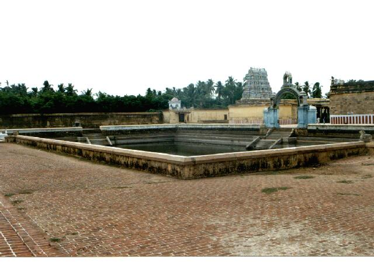
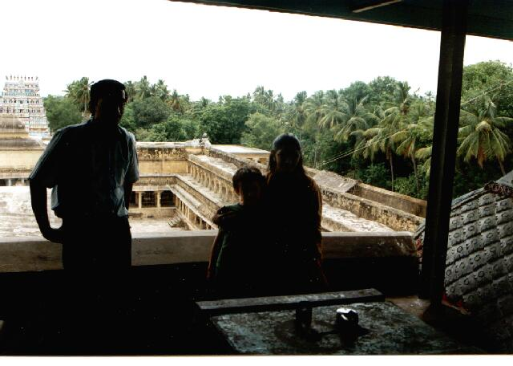
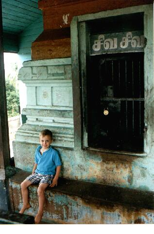

kāḻi
- Identifier: KV14
- Modern Name (NIC):
- Modern Name (M.I.): cīkāḻi, śrīkāḻi
- Modern Name (Govt Press): cīyāḻi
- Modern Name: cīrkāḻi
- Other Name: śrīkāḻi (SSM)
- Other Name(2): cīkāḻi
- Modern District & Taluk: nākappaṭṭiṉam DT (cīrkāḻi TK)
- Old administrative location: Tanjore DT (Shiyally TK)
- Nearby town:
- Railway station:
- Longit. 79 deg. 44'; Latit. 11 deg. 14' [KV14]
- C.D.Maclean-3: entry: SHIYALLY (2), p. 827, col. 2,
[shiyally, town, head-quarters of talook,
lat. 11deg. 14', long. 79deg. 47']
- Location: according to PK: Cōḻa Nāṭu, Kāvēri Vaṭa Kari (KV14)
- Name inside hymns:
- Name inside PK: kāḻi
- Rank inside third volume of PIFI: 88
- Rank inside Civastala Mañcari: 88
- Rank on PY576 map: 97
- Total number of patikam-s: 71
- Campantar: 67 patikam
- Appar: 3 patikam
- Cuntarar: 1 patikam
This place is famous inside Tēvāram for having 12 different
names (see below list of names).
9 pictures taken on 1997 August 10th (Sunday morning)








- piramapuram
--Campantar: 15 patikam
- vēṇupuram
--Campantar: 3 patikam
- pukali
--Campantar: 9 patikam
- veṅkuru
--Campantar: 2 patikam
- tōṇipuram
--Campantar: 3 patikam
--Appar: 1 patikam
- pūntarāy
--Campantar: 4 patikam
- cirapuram
--Campantar: 3 patikam
- puṟavam
--Campantar: 3 patikam
- caṇpinakar
--Campantar: 2 patikam
- cīkāḻi
--Campantar: 13 patikam
- koccivayam
--Campantar: 3 patikam
- kaḻumalam
--Campantar: 7 patikam
--Appar: 2 patikam
--Cuntarar: 1 patikam
List of patikam-s (by Authors)
Campantar:
piramapuram
- Patikam 1_1
- Patikam 1_63
- Patikam 1_90
- Patikam 1_117
- Patikam 1_127
- Patikam 1_128
- Patikam 2_40
- Patikam 2_65
- Patikam 2_70
- Patikam 2_73
- Patikam 2_74
- Patikam 3_37
- Patikam 3_56
- Patikam 3_67
- Patikam 3_110
vēṇupuram
- Patikam 1_9
- Patikam 2_17
- Patikam 2_81
pukali
- Patikam 1_4
- Patikam 1_30
- Patikam 1_104
- Patikam 2_25
- Patikam 2_29
- Patikam 2_54
- Patikam 2_122
- Patikam 3_3
- Patikam 3_7
veṅkuru
- Patikam 1_75
- Patikam 3_94
tōṇipuram
- Patikam 1_60
- Patikam 3_81
- Patikam 3_100
pūntarāy
- Patikam 2_1
- Patikam 3_2
- Patikam 3_5
- Patikam 3_13
cirapuram
- Patikam 1_47
- Patikam 1_109
- Patikam 2_102
puṟavam
- Patikam 1_74
- Patikam 1_97
- Patikam 3_84
caṇpinakar
- Patikam 1_66
- Patikam 3_75
cīkāḻi
- Patikam 1_24
- Patikam 1_34
- Patikam 1_81
- Patikam 1_102
- Patikam 2_11
- Patikam 2_49
- Patikam 2_59
- Patikam 2_75
- Patikam 2_96
- Patikam 2_97
- Patikam 2_113
- Patikam 3_43
- Patikam 3_117
koccivayam
- Patikam 2_83
- Patikam 2_89
- Patikam 3_89
kaḻumalam
- Patikam 1_19
- Patikam 1_79
- Patikam 1_126
- Patikam 1_129
- Patikam 3_24
- Patikam 3_113
- Patikam 3_118
Appar:
tōṇipuram
- Patikam 5_45
kaḻumalam
- Patikam 4_82
- Patikam 4_83
Cuntarar:
kaḻumalam
- Patikam 7_58